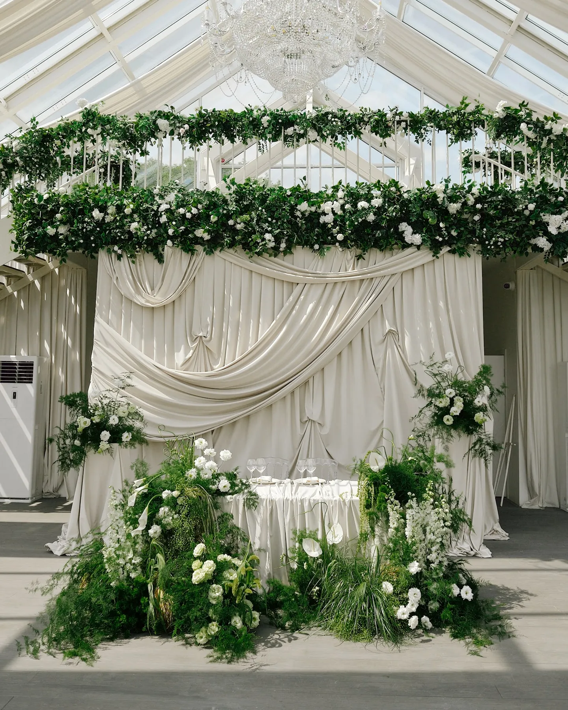
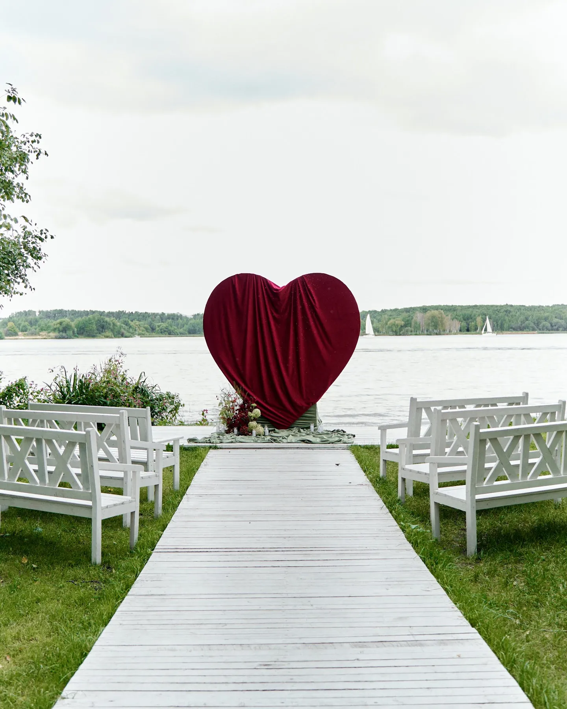
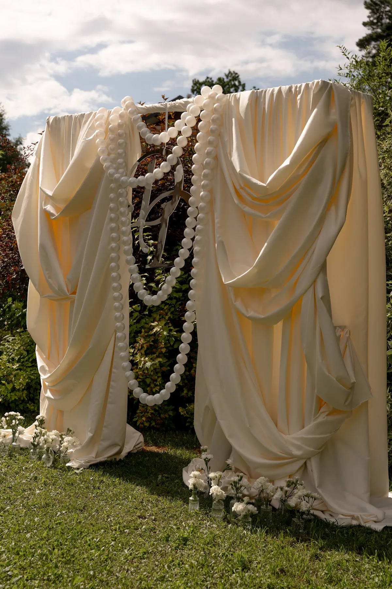
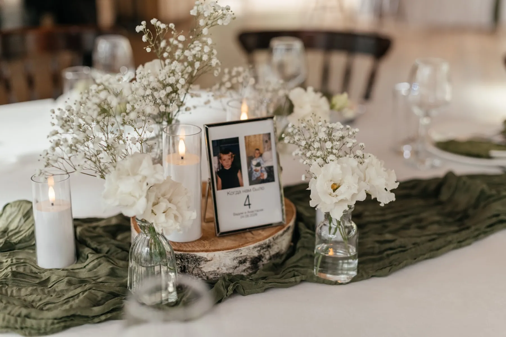
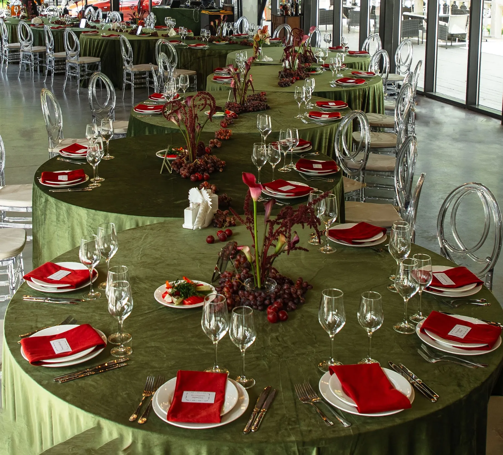
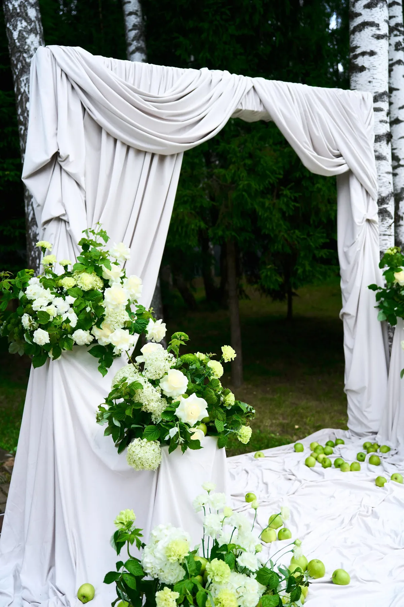
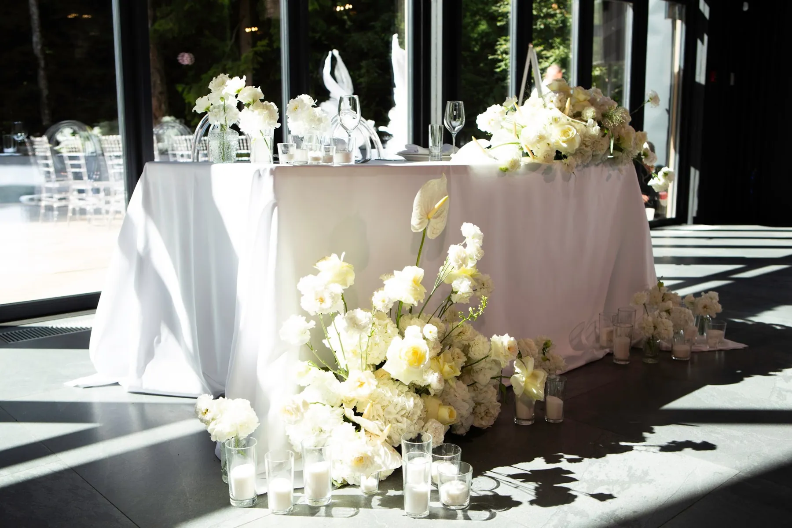
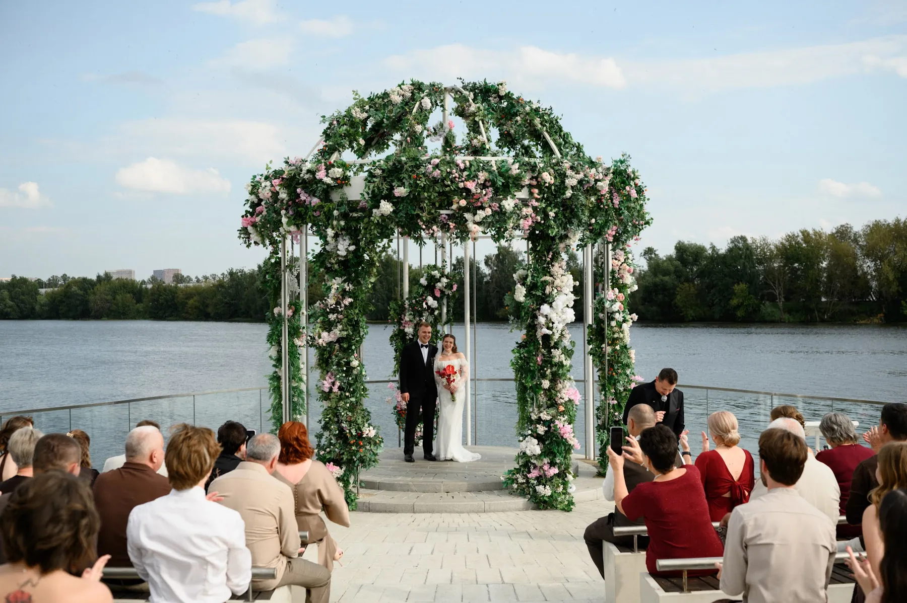

Кейсы декора
Свадьбы 2026 года, которые оформляла наша студия: концепция, палитра и декор по зонам — церемония, президиум, гостевые столы, детали.

Кейс · 01 Константин и Дарья «Белый сад под стеклом» · 11 / 06 / 26 Кейс · 02
Руслан и Дарья
«Шёлк, пионы и свечи» · 01 / 08 / 26
Кейс · 02
Руслан и Дарья
«Шёлк, пионы и свечи» · 01 / 08 / 26
 Кейс · 03
Сергей и София
«Голубая арка» · 2026
Кейс · 03
Сергей и София
«Голубая арка» · 2026

Кейс · 04 Ваня и Оля «Бордовое сердце у воды» · 27 / 08 / 26
Кейс · 05 Дилшод и Диана «Шёлк и жемчуг в саду» · 2026
Кейс · 06 Вадим и Анастасия «Зелень и свечи в лесном павильоне» · 24 / 08 / 26
Кейс · 07 Артём и Екатерина «Красный бархат и зелень» · 24 / 06 / 26
Кейс · 08 Павел и Юлия «Белый шатёр и зелёные яблоки» · 07 / 26
Кейс · 09 Дмитрий и Диана «Белые цветы в тёмном зале» · 08 / 08 / 26
Кейс · 10 Михаил и Елизавета «Ротонда у воды» · 07 / 08 / 26